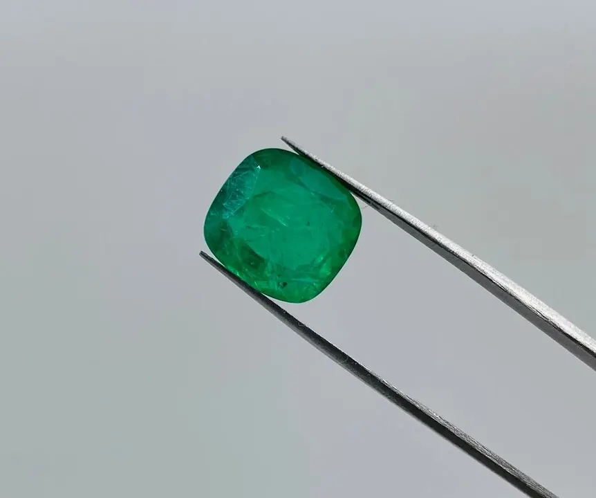

花園 jardin：祖母綠內含物之美
祖母綠的內含物不是瑕疵，是一座顯微鏡下的花園——行家看 jardin，像鑑賞家看山水畫。

核心定義
「花園」（jardin，法語「花園」之意）是寶石學界對祖母綠內含物的浪漫稱呼：在顯微鏡下，祖母綠內部的三相包裹體、裂縫、針狀物與液體包體交織，像一座微縮的植物園。每一顆祖母綠的花園都獨一無二，是它的「指紋」。
祖母綠多內含物是它的天性：結晶環境高壓多震、裂隙發育，加上鉻釩致色需要特殊地質——「乾淨的祖母綠」反而是極少數。寶石界因此發展出「花園美學」：內含物若能形成美感、不影響耐久，就從減分項變成天然證明與收藏敘事。
特徵與分類
| 內含物類型 | 描述 | 鑑定意義 |
|---|---|---|
| 三相包裹體 | 液+氣+固同泡 | 哥倫比亞特徵 |
| 針狀物 | 金紅石/綠柱石針 | 產地線索 |
| 裂縫與癒合紋 | 羽毛狀裂隙 | 注油對象、耐久度 |
| 固體晶體 | 黃鐵礦、白雲石等 | 天然證據 |
鑑定師看花園，會評估三件事：內含物能否佐證天然與產地、是否影響耐久（深裂縫要小心）、以及「美不美」——有些花園被形容為「風景」，成為收藏家口中的「景觀祖母綠」。
科學原理
三相包裹體的科學：祖母綠結晶時捕獲含鹽熱液，降溫後液體中析出鹽晶、釋出氣泡——「液＋氣＋固」三態共存於一個空腔，是哥倫比亞沉積礦床的經典地質簽名。
裂縫的成因：祖母綠結晶後受到地質應力，沿弱面開裂；部分裂縫在後期被熱液癒合，留下癒合紋——這些裂隙正是注油工藝的「載體」，也是祖母綠耐久度需要評估的地方。
鑑定與鑑別方法
- 顯微鏡觀察內含物種類與分布
- 找三相包裹體（哥倫比亞）與針狀物
- 評估深裂縫是否影響耐久（敲擊風險）
- 看花園是否「成景」：美感是收藏加分
- 對照實驗室報告的內含物描述欄
市場行情與保養建議
市場上，「花園」的評估是祖母綠定價的一部分：內含物不影響美觀與耐久者，價格看顏色與克拉；內含物過多過雜、裂縫深者，價格明顯打折。近年「景觀祖母綠」（內含物如畫）在收藏圈蔚為風潮，獨特花園反而成為賣點。
實用建議：買祖母綠，花園是「個性」不是「瑕疵」——但深裂縫要檢查（怕敲、怕超音波），注油程度要看證書。美與安全，兩者都要顧。
常見誤區
天然祖母綠幾乎都有內含物，「乾淨」到像鑽石反而不正常（合成或仿品）。用鑽石標準衡量祖母綠，是最大的誤解。
頂級哥倫比亞祖母綠也帶花園——內含物是常態。真正影響價格的是顏色、克拉與內含物是否影響美觀耐久，不是「有無」。
冷知識
這個浪漫的詞彙源自法國寶石界，形容祖母綠內含物的自然景觀——寶石學裡，很少有比這更詩意的術語。
部分祖母綠的內含物分布如山水、如森林，被收藏家當作微型藝術品——「景觀祖母綠」在拍賣市場有獨立敘事與行情。
反直覺觀點
獨特花園讓祖母綠成為「唯一」——同一產地同品質，花園如畫者反而有收藏溢價。瑕疵與藝術，只差一個懂得欣賞的視角。
天然祖母綠的內含物是天然證明；過度乾淨的綠色寶石，可能是合成、注色或根本不是祖母綠——花園，是天然的護身符。